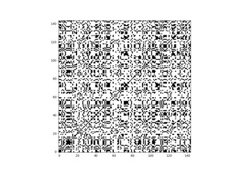
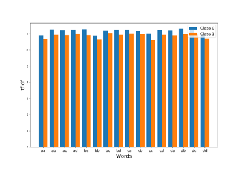
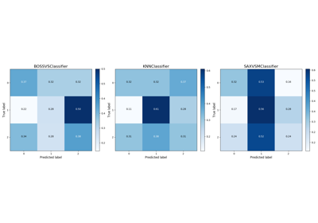

Examples¶
Here you can find some introductory examples about the algorithms implemented in this package. It may help you understand how to use the implementations of these algorithms as well as what these algorithms do.







Here you can find some introductory examples about the algorithms implemented in this package. It may help you understand how to use the implementations of these algorithms as well as what these algorithms do.